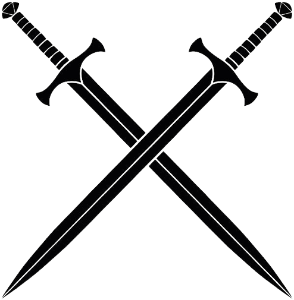

|  | Smart Wound Monitoring Restorative Dressings (SWORD)Home Objectives Collaborating Partners Secondments Contact Us Work |
Secondments will be offered on a competitive basis to eligible employees of participating organizations. Interested employees can apply by submitting a secondment proposal outlining their proposed project and its benefits to both the host organization and their home organization. The selection of secondees will be based on the quality of their proposal and the needs of the host organization.